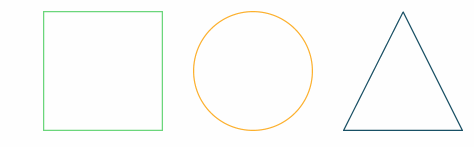
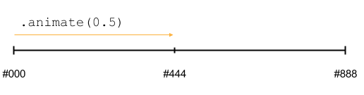

Build status and browser tests for current master
Build status and browser tests for current masterVersion: 0.7.4 (previous stable, latest dev)

Beautiful and responsive progress bars with animated SVG paths.
Use built-in shapes or create your own paths.
Customize the animations as you wish.
See demo page for examples or try it in JSFiddle.
Build status and browser tests for current master

ProgressBar.js is lightweight, MIT licensed and supports all major browsers including IE9+. See complete examples in examples section.
Using bower
bower install progressbar.jsUsing npm
npm install progressbar.jsIncluding dist/progressbar.js or dist/progressbar.min.js from latest tag to your project.
Files in dist/ folder are UMD modules built with Browserify's --standalone switch. Read more about standalone Browserify builds.
CommonJS
var ProgressBar = require('progressbar.js')
var line = new ProgressBar.Line('#container');AMD
require.config({
paths: {"progressbar": "../bower_components/progressbar.js/dist/progressbar"}
});
define(['progressbar'], function(ProgressBar) {
var line = new ProgressBar.Line('#container');
});Global variable
// If you aren't using any module loader, progressbar.js exposes
// global variable: window.ProgressBar
var line = new ProgressBar.Line('#container');Progress bars are just regular SVG paths. Read Jake Archibald's blog post to see how the path drawing works under the hood.
ProgressBar.js uses shifty tweening library to animate path drawing. So in other words, animation is done with JavaScript using requestAnimationFrame. Animating with JS gives more control over the animation and is supported across major browsers. For example IE does not support animating SVG properties with CSS transitions.
NOTE: Line, Circle and Square links all point to the same documentation which is named Shape. Shape is not a real attribute, instead you should replace it with Line, Circle or Square.
Functions use node-style callback convention. Callback function is always the last given parameter.
All built-in shapes except Line are drawn on 100x100 SVG canvas and the shape is fitted exactly to the canvas. Line is drawn on 100-width canvas and height depends on the stroke width.
Line, Circle or Square shaped progress bar. Appends SVG to container.
Example
var progressBar = new ProgressBar.Square('#container', {
strokeWidth: 2
});To make the shape resize with its container, set for example the following CSS:
.container > svg {
display: block;
width: 100%;
}With Line shape, you can control the width of the line by specifying e.g. height: 5px
with CSS.
Parameters
container Element where SVG is added. Query string or element.
For example "#container" or document.getElementById("#container")
options Options for path drawing.
{
// Stroke color.
// Default: "#555"
color: "#3a3a3a",
// Width of the stroke.
// Unit is percentage of SVG canvas' size.
// Default: 1.0
strokeWidth: 2.1,
// If trail options are not defined, trail won't be drawn
// Color for lighter trail stroke
// underneath the actual progress path.
// Default: '#eee'
trailColor: "#f4f4f4",
// Width of the trail stroke. Trail is always centered relative to
// actual progress path.
// Default: same as strokeWidth
trailWidth: 0.8,
// Text options. Text element is a <p> element appended to container
// You can add CSS rules for the text element with the className
// NOTE: When text is set, 'position: relative' will be set to the
// container for centering. You can also prevent all style modifications
// with 'autoStyle: false'
// Default: null
text: {
// Initial value for text.
// Default: null
value: 'Text',
// Text color.
// Default: same as stroke color (options.color)
color: '#f00',
// Class name for text element.
// Default: 'progressbar-text'
className: 'progressbar__label',
// If true, CSS is automatically set for container and text element.
// If you want to modify all CSS your self, set this to false
// Default: true
autoStyle: true
},
// Fill color for the shape. If null, no fill.
// Default: null
fill: "rgba(0, 0, 0, 0.5)",
// Duration for animation in milliseconds
// Default: 800
duration: 1200,
// Easing for animation. See #easing section.
// Default: "linear"
easing: "easeOut",
// See #custom-animations section
// Built-in shape passes reference to itself as attachment
// to step function
from: { color: '#eee' },
to: { color: '#000' },
step: function(state, square) {
square.path.setAttribute('stroke', state.color);
}
}Reference to SVG element where progress bar is drawn.
Reference to SVG path which presents the actual progress bar.
Reference to SVG path which presents the trail of the progress bar.
Returns null if trail is not defined.
Reference to p element which presents the text label for progress bar.
Returns null if text is not defined.
Animates drawing of a shape.
Example
progressBar.animate(0.3, {
duration: 800
}, function() {
console.log('Animation has finished');
});Parameters
progress progress from 0 to 1.options Animation options. These options override the defaults given in initialization.
{
// Duration for animation in milliseconds
// Default: 800
duration: 1200,
// Easing for animation. See #easing section.
// Default: "linear"
easing: "easeInOut",
// See #custom-animations section
// Built-in shape passes reference to itself as attachment
// to step function
from: { color: '#eee' },
to: { color: '#000' },
step: function(state, square) {
square.path.setAttribute('stroke', state.color);
}
}cb Callback function which is called after animation ends.
Sets progress instantly without animation. Clears all animations for path.
Stops animation to its current position.
Returns current shown progress from 0 to 1. This value changes when animation is running.
Sets text to given a string. If you need to dynamically modify the text element, see .text attribute.
Removes SVG element from container and removes all references to DOM elements. Destroying is irreversible.
Custom shaped progress bar. You can create arbitrary shaped progress bars by passing a SVG path created with e.g. Adobe Illustrator. It's on caller's responsibility to append SVG to DOM.
Example
Assuming there was SVG object with heart shaped path in HTML
<svg xmlns="http://www.w3.org/2000/svg" version="1.1" x="0px" y="0px" viewBox="0 0 100 100">
<path fill-opacity="0" stroke-width="0.5" stroke="#f4f4f4" d="M81.495,13.923c-11.368-5.261-26.234-0.311-31.489,11.032C44.74,13.612,29.879,8.657,18.511,13.923 C6.402,19.539,0.613,33.883,10.175,50.804c6.792,12.04,18.826,21.111,39.831,37.379c20.993-16.268,33.033-25.344,39.819-37.379 C99.387,33.883,93.598,19.539,81.495,13.923z"/>
<path id="heart-path" fill-opacity="0" stroke-width="0.6" stroke="#555" d="M81.495,13.923c-11.368-5.261-26.234-0.311-31.489,11.032C44.74,13.612,29.879,8.657,18.511,13.923 C6.402,19.539,0.613,33.883,10.175,50.804c6.792,12.04,18.826,21.111,39.831,37.379c20.993-16.268,33.033-25.344,39.819-37.379 C99.387,33.883,93.598,19.539,81.495,13.923z"/>
</svg>Initialization would be this easy
var svgPath = document.getElementById("heart-path");
var path = new ProgressBar.Path(svgPath, {
duration: 300
});Working with embedded SVG
If the SVG was not inline in the HTML but instead in, say, an <object> tag, we'd have to take extra steps to wait until it has loaded and then access it differently since it's in a separate DOM tree. Given e.g.:
<object id="heart" type="image/svg+xml" data="heart.svg">No SVG support :(</object>we could do
var heart = document.getElementById('heart');
heart.addEventListener('load', function () {
var path = new ProgressBar.Path(heartObject.contentDocument.querySelector('#heart-path'), {
duration: 300
});Parameters
path SVG Path object. For example $('svg > path:first-child')[0].options Animation options.
{
// Duration for animation in milliseconds
// Default: 800
duration: 1200,
// Easing for animation. See #easing section.
// Default: "linear"
easing: "easeIn",
// Attachment which can be any object
// you need to modify within the step function.
// Passed as a parameter to step function.
// Default: undefined
attachment: document.querySelector('#container > svg'),
// See #custom-animations section
from: { color: '#eee' },
to: { color: '#000' },
step: function(state, attachment) {
// Do any modifications to attachment attributes
}
}Animates drawing of path.
Example
path.animate(0.3, {
duration: 800
}, function() {
console.log('Animation has finished');
});Parameters
progress progress from 0 to 1.options Animation options. These options override the defaults given in initialization.
{
// Duration for animation in milliseconds
// Default: 800
duration: 1200,
// Easing for animation. See #easing section.
// Default: "linear"
easing: "easeOut",
// Attachment which can be any object
// you need to modify within the step function.
// Passed as a parameter to step function.
// Default: undefined
attachment: document.querySelector('#container > svg'),
// See #custom-animations section
from: { color: '#eee' },
to: { color: '#000' },
step: function(state, attachment) {
// Do any modifications to attachment attributes
}
}cb Callback function which is called after transition ends.
Set progress instantly without animation. Clears all transitions for path.
Stops animation to its current position.
Returns current shown progress from 0 to 1. This value changes when animation is running.
Easing functions provided with shifty are supported.
A few basic easing options:
"linear""easeIn""easeOut""easeInOut"See example in demo page.
Customizing animations is possible with the help of from, to and step parameters.
Tweening engine changes defined values over time and calls step function for each animation's frame.
from Object containing values which should be tweened.
These values represent the starting values of the animation. Default: {}.
For example
{
// Start from thin gray line
width: 0.1,
color: "#eee"
} Thanks to shifty, you can tween values in formats like translateX(45px), rgb(0,255,0) and #fff.
See all supported string formats from shifty's documentation
Easing defined as option for animation applies to all of the specified values.
to Object containing values which should be tweened. These represent the final values after animation is done. Default: {}.
For example
{
// Finish to thick black line
width: 1,
color: "#000"
} Signature must match from
step Function called for each animation step. Tweened values and reference to attachment are passed as parameters. Attachment can be reference to any object you need to modify within step function. Built-in shapes pass references to their selves as attachment. Default: function() {}.
This function is called multiple times per second. To make sure animations run smoothly, keep it minimal.
For example
function(state, attachment) {
attachment.path.setAttribute('stroke-width', state.width);
attachment.path.setAttribute('stroke', state.color);
}Note: There's a big difference between passing the from and to parameters in initialization
of progress bar compared to passing in .animate() call. Here's example code and illustrations to explain the difference:
Pass in initialization
var bar = new ProgressBar.Line('#container', {
from: { color: '#000 '},
to: { color: '#888 '},
step: function(state, bar) {
bar.setAttribute('stroke', state.color);
}
});
Pass in .animate() call
var bar = new ProgressBar.Line('#container', {
step: function(state, bar) {
bar.setAttribute('stroke', state.color);
}
});
var opts = {
from: { color: '#000 '},
to: { color: '#888 '}
};
bar.animate(0.5, opts);See documentation for contributors.
This project is a grateful recipient of the Futurice Open Source sponsorship program.